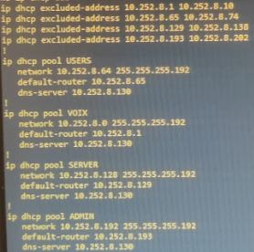

UE x.3 – Programmer : outils & applications R&T
Au sein de cette UE, nous avons appris à concevoir, coder et tester des applications communicantes, à traiter et valoriser les données réseau et à industrialiser nos développements via la gestion de version et l'intégration continue ; ces acquis couvrent les composantes essentielles CE3.01 à CE3.05.
SAÉ1.04 – Se présenter sur Internet
Compétence : Identité numérique & e-réputation
Description
Réflexion sur l'identité numérique, création d'une page personnelle et présentation d'un centre d'intérêt / projet.
Preuves & traces
- Site du projet : ochf21.github.io/portfolio
Conclusion
Compétences : gestion identité numérique, création web pro et amélioration de l'e-réputation.
SAÉ1.05 – Traiter des données
Compétence : Programmation réseau (Scapy)
Description
Scripts Python avec Scapy : découverte d'hôtes et attaque Man-in-the-Middle.
Preuves & traces
- Script de découverte d'hôtes et script ARP Spoofing (Scapy).
Conclusion
Compétences : analyse et manipulation de paquets, scripting Scapy.
SAÉ2.04 – Projet intégratif
Compétence : Gestion & configuration réseau local
Description
Maquette réseau VLAN, téléphonie SIP, collecte MQTT et appli Web pour visualiser les données.
Preuves & traces
- Topologie réseau, découpage IP, DHCP, NAT, ACL.

Conclusion
Acquis : admin réseau, VoIP, MQTT et développement Django/MySQL.
SAÉ3.02 – Apps communicantes
Compétence : Applications communicantes
Description
Développement d'une application communicante répartissant l'exécution de code Python, Java ou C sur un cluster client-maître-esclaves via sockets TCP, avec répartition de charge et fiabilité des échanges.
Preuves & traces
- Repository GitHub : github.com/ochf21/SAE302
- Compte rendu en PDF
- Vidéo de présentation : YouTube
Conclusion
Renforcement des compétences en programmation réseau, communication inter-processus et architecture client/serveur.
SAE5.02 – Piloter un projet informatique
Compétence : Gestion de projet & programmation système
Contexte
Projet réalisé durant 3 semaines dans le cadre de l'intégration en double cursus à l'ENSISA (École Nationale Supérieure d'Ingénieurs Sud Alsace).
Objectifs
- Développer un jeu complexe en langage C
- Implémenter une architecture réseau client-serveur
- Gérer un projet en équipe avec contraintes de temps
- Participer à une compétition inter-groupes
Le jeu : Krojanty
Krojanty est un jeu de stratégie similaire aux échecs avec ses propres règles spécifiques. Le projet comportait trois phases principales :
- 🎮 Phase 1 : Développement du jeu
- Implémentation complète des règles du jeu en C
- Interface utilisateur en mode console
- Gestion des mouvements et validation des coups
- Détection des conditions de victoire
- 🌐 Phase 2 : Mise en réseau
- Architecture client-serveur avec sockets TCP
- Protocole de communication personnalisé
- Gestion des connexions multiples
- Synchronisation des états de jeu
- 🏆 Phase 3 : Tournoi
- Développement d'une IA pour jouer automatiquement
- Optimisation des algorithmes de décision
- Compétition contre les autres groupes
Compétences techniques
- Programmation système en C
- Programmation réseau (sockets, TCP/IP)
- Algorithmique et structures de données
- Développement d'IA (algorithmes de jeu)
- Gestion de projet agile
- Travail en équipe et répartition des tâches
Résultat
Développement réussi d'un jeu fonctionnel en réseau, participation au tournoi et acquisition de compétences approfondies en programmation système et réseau.